This HowTo is about hierarchical tables and how to handle them with CTE.
Here an example.
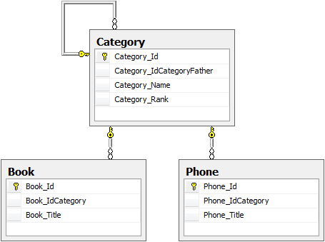The SQL script (tables and data) is available here for testing.
Category data.
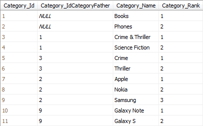The following request displays the Category hierarchy.
; WITH Hierarchy (ParentId, ChildId, ChildName, Deeper, Ordering) AS ( SELECT Category_Id, Category_IdCategoryFather, Category_Name, 0, CAST(Category_Id AS VARCHAR(8)) FROM Category WHERE Category_IdCategoryFather IS NULL UNION ALL SELECT Child.Category_Id, Child.Category_IdCategoryFather, Child.Category_Name, Hierarchy.Deeper + 1, CAST(Hierarchy.Ordering + '_' + CAST(Child.Category_Id AS VARCHAR) AS VARCHAR(8)) FROM Category Child INNER JOIN Hierarchy on Child.Category_IdCategoryFather = Hierarchy.ParentId ) SELECT REPLICATE(' ', Deeper * 3) + '| ' + ChildName, Deeper FROM Hierarchy ORDER BY Ordering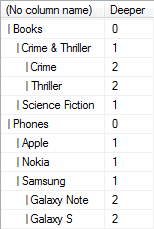
Book data.
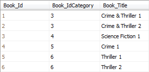Phone data.
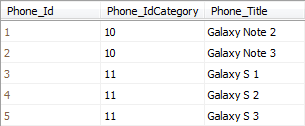Category_Custom_GetChildren
Get the children of the specified Category.
CREATE PROCEDURE Category_Custom_GetChildren ( @Category_Id BIGINT = NULL, @CtxUser BIGINT = NULL, -- Not used @CtxCulture VARCHAR(2) = N'EN', -- Not used @CtxWithContextSecurity BIT = N'True' -- Not used ) AS BEGIN SET NOCOUNT ON SELECT *, (SELECT COUNT(0) FROM Category C WITH(NOLOCK) WHERE C.Category_IdCategoryFather = Category.Category_Id) AS ChildrenCount, (SELECT COUNT(0) FROM Book B WITH(NOLOCK) WHERE B.Book_IdCategory = Category_Id) AS BookCount, (SELECT COUNT(0) FROM Phone P WITH(NOLOCK) WHERE P.Phone_IdCategory = Category_Id) AS PhoneCount FROM Category WITH(NOLOCK) WHERE @Category_Id IS NULL AND Category.Category_IdCategoryFather IS NULL UNION -- To avoid OR operator in WHERE (bad for performances) SELECT *, (SELECT COUNT(0) FROM Category C WITH(NOLOCK) WHERE C.Category_IdCategoryFather = Category.Category_Id) AS ChildrenCount, (SELECT COUNT(0) FROM Book B WITH(NOLOCK) WHERE B.Book_IdCategory = Category_Id) AS BookCount, (SELECT COUNT(0) FROM Phone P WITH(NOLOCK) WHERE P.Phone_IdCategory = Category_Id) AS PhoneCount FROM Category WITH(NOLOCK) WHERE @Category_Id IS NOT NULL AND Category.Category_IdCategoryFather = @Category_Id END
EXEC [dbo].[Category_Custom_GetChildren] @Category_Id = NULL -- Root categories EXEC [dbo].[Category_Custom_GetChildren] @Category_Id = 1 -- 'Books' category EXEC [dbo].[Category_Custom_GetChildren] @Category_Id = 3 -- 'Crime & Thriller' category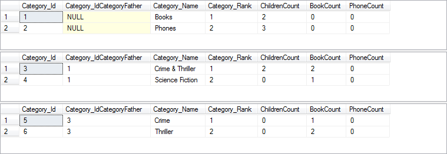
Category_Custom_GetChildrenAndDescendants
Get the children & all the descendants of the specified Category.
CREATE PROCEDURE Category_Custom_GetChildrenAndDescendants ( @Category_Id BIGINT = NULL, @DeepLimit INT = NULL, @CtxUser BIGINT = NULL, -- Not used @CtxCulture VARCHAR(2) = N'EN', -- Not used @CtxWithContextSecurity BIT = N'True' -- Not used ) AS BEGIN SET NOCOUNT ON ; WITH Hierarchy ( Category_Id, Category_IdCategoryFather, Category_Name, Category_Rank, Deep ) AS ( SELECT Category.*, 0 FROM Category WITH(NOLOCK) WHERE @Category_Id IS NULL AND Category.Category_IdCategoryFather IS NULL UNION -- To avoid OR operator in WHERE (bad for performances) SELECT Category.*, 0 FROM Category WITH(NOLOCK) WHERE @Category_Id IS NOT NULL AND Category.Category_IdCategoryFather = @Category_Id UNION ALL SELECT Category.*, Hierarchy.Deep + 1 FROM Category WITH(NOLOCK) INNER JOIN Hierarchy ON Hierarchy.Category_Id = Category.Category_IdCategoryFather WHERE Hierarchy.Deep < ISNULL(@DeepLimit, 99) ) SELECT DISTINCT Hierarchy.*, (SELECT COUNT(0) FROM Category C WITH(NOLOCK) WHERE C.Category_IdCategoryFather = Hierarchy.Category_Id) AS ChildrenCount, (SELECT COUNT(0) FROM Book B WITH(NOLOCK) WHERE B.Book_IdCategory = Hierarchy.Category_Id) AS BookCount, (SELECT COUNT(0) FROM Phone P WITH(NOLOCK) WHERE P.Phone_IdCategory = Category_Id) AS PhoneCount FROM Hierarchy ORDER BY Hierarchy.Deep END
EXEC [dbo].[Category_Custom_GetChildrenAndDescendants] @Category_Id = NULL, -- Root categories @DeepLimit = NULL EXEC [dbo].[Category_Custom_GetChildrenAndDescendants] @Category_Id = 2, -- 'Phones' category @DeepLimit = NULL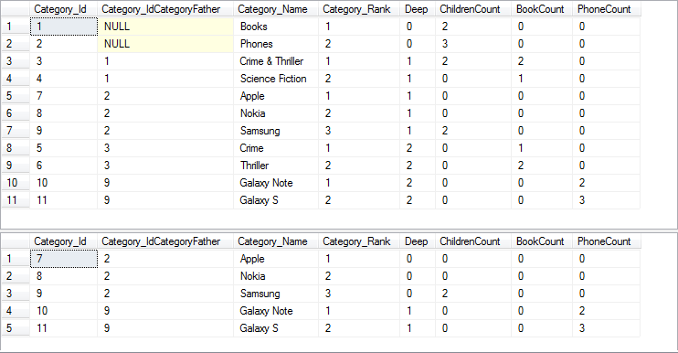
Category_Custom_GetFather
Get the father of the specified Category.
CREATE PROCEDURE Category_Custom_GetFather ( @Category_Id BIGINT, @CtxUser BIGINT = NULL, -- Not used @CtxCulture VARCHAR(2) = N'EN', -- Not used @CtxWithContextSecurity BIT = N'True' -- Not used ) AS BEGIN SET NOCOUNT ON SELECT *, (SELECT COUNT(0) FROM Category C3 WITH(NOLOCK) WHERE C3.Category_IdCategoryFather = C1.Category_Id) AS ChildrenCount, (SELECT COUNT(0) FROM Book B WITH(NOLOCK) WHERE B.Book_IdCategory = Category_Id) AS BookCount, (SELECT COUNT(0) FROM Phone P WITH(NOLOCK) WHERE P.Phone_IdCategory = Category_Id) AS PhoneCount FROM Category C1 WITH(NOLOCK) WHERE C1.Category_Id = (SELECT TOP 1 C2.Category_IdCategoryFather FROM Category C2 WITH(NOLOCK) WHERE C2.Category_Id = @Category_Id) END
EXEC [dbo].[Category_Custom_GetFather] @Category_Id = 11 -- 'Galaxy S' category
Category_Custom_GetFatherAndAncestors
Get the father & all the ancestors of the specified Category.
CREATE PROCEDURE Category_Custom_GetFatherAndAncestors ( @Category_Id BIGINT, @DeepLimit INT = NULL, @CtxUser BIGINT = NULL, -- Not used @CtxCulture VARCHAR(2) = N'EN', -- Not used @CtxWithContextSecurity BIT = N'True' -- Not used ) AS BEGIN SET NOCOUNT ON ; WITH Hierarchy ( Category_Id, Category_IdCategoryFather, Category_Name, Category_Rank, Deep ) AS ( SELECT Category.*, 0 FROM Category WITH(NOLOCK) WHERE Category.Category_Id = (SELECT TOP 1 C1.Category_IdCategoryFather FROM Category C1 WITH(NOLOCK) WHERE C1.Category_Id = @Category_Id) UNION ALL SELECT Category.*, Hierarchy.Deep + 1 FROM Category WITH(NOLOCK) INNER JOIN Hierarchy ON Hierarchy.Category_IdCategoryFather = Category.Category_Id WHERE Hierarchy.Deep < ISNULL(@DeepLimit, 99) ) SELECT DISTINCT Hierarchy.*, (SELECT COUNT(0) FROM Category C WITH(NOLOCK) WHERE C.Category_IdCategoryFather = Hierarchy.Category_Id) AS ChildrenCount, (SELECT COUNT(0) FROM Book B WITH(NOLOCK) WHERE B.Book_IdCategory = Hierarchy.Category_Id) AS BookCount, (SELECT COUNT(0) FROM Phone P WITH(NOLOCK) WHERE P.Phone_IdCategory = Category_Id) AS PhoneCount FROM Hierarchy ORDER BY Hierarchy.Deep END
EXEC [dbo].[Category_Custom_GetFatherAndAncestors] @Category_Id = 11, -- 'Galaxy S' category @DeepLimit = NULL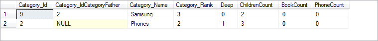
Category_Custom_GetHierarchy
Get the hierarchy of the specified Category.
CREATE PROCEDURE Category_Custom_GetHierarchy ( @Category_Id BIGINT = NULL, @DeepLimit INT = NULL, @CtxUser BIGINT = NULL, -- Not used @CtxCulture VARCHAR(2) = N'EN', -- Not used @CtxWithContextSecurity BIT = N'True' -- Not used ) AS BEGIN SET NOCOUNT ON ; WITH Hierarchy ( Category_Id, Category_IdCategoryFather, Category_Name, Category_Rank, Deep ) AS ( SELECT Category.*, 0 FROM Category WITH(NOLOCK) WHERE @Category_Id IS NULL AND Category.Category_IdCategoryFather IS NULL UNION -- To avoid OR operator in WHERE (bad for performances) SELECT Category.*, 0 FROM Category WITH(NOLOCK) WHERE @Category_Id IS NOT NULL AND Category.Category_IdCategoryFather = @Category_Id UNION ALL SELECT Category.*, Hierarchy.Deep + 1 FROM Category WITH(NOLOCK) INNER JOIN Hierarchy ON Hierarchy.Category_Id = Category.Category_IdCategoryFather WHERE Hierarchy.Deep < ISNULL(@DeepLimit, 99) ) SELECT DISTINCT Hierarchy.*, (SELECT COUNT(0) FROM Category C WITH(NOLOCK) WHERE C.Category_IdCategoryFather = Hierarchy.Category_Id) AS ChildrenCount, (SELECT COUNT(0) FROM Book B WITH(NOLOCK) WHERE B.Book_IdCategory = Hierarchy.Category_Id) AS BookCount, (SELECT COUNT(0) FROM Phone P WITH(NOLOCK) WHERE P.Phone_IdCategory = Category_Id) AS PhoneCount FROM Hierarchy ORDER BY Hierarchy.Deep END
EXEC [dbo].[Category_Custom_GetHierarchy] @Category_Id = 2, -- 'Phones' category @DeepLimit = NULL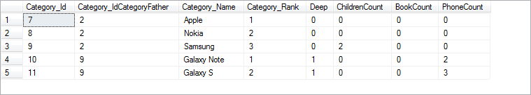
Category_Custom_SearchHierarchy
Retrieve all the Categories that match the search criteria (and all the hierarchy to be able to recreate and expand it on code-side).
CREATE PROCEDURE Category_Custom_SearchHierarchy ( @SearchString VARCHAR(128) = NULL, @SelectedIdCategory BIGINT = NULL, @CtxUser BIGINT = NULL, -- Not used @CtxCulture VARCHAR(2) = N'EN', -- Not used @CtxWithContextSecurity BIT = N'True' -- Not used ) AS BEGIN SET NOCOUNT ON -- Table that will contains the results DECLARE @T_DATA TABLE ( _IsFound BIT, _IsSelected BIT, Category_Id BIGINT, Category_IdCategoryFather BIGINT, Category_Name VARCHAR(64), Category_Rank INT ) -- Using CTE to -- 1. Find all the nodes (*found-nodes*) that match the @SearchString value -- 2. Get the parents nodes (*parents-nodes*) recursively ((*found-nodes*) -> roots) ; WITH TREE ( _IsFound, _IsSelected, Category_Id, Category_IdCategoryFather, Category_Name, Category_Rank ) AS ( -- -> 1. Find all the nodes (*found-nodes*) that match the @SearchString value... SELECT 1, (CASE Category.Category_Id WHEN @SelectedIdCategory THEN 1 ELSE 0 END) AS _IsSelected, Category_Id, Category_IdCategoryFather, Category_Name, Category_Rank FROM Category WITH(NOLOCK) WHERE @SearchString IS NOT NULL -- IF 1 AND LEN(@SearchString) != 0 -- IF 2 AND Category_Name COLLATE French_CI_AI LIKE '%' + @SearchString + '%' COLLATE French_CI_AI -- Prefere using Fast Search Text here UNION ALL -- -> 2. Get the parents nodes (*parents-nodes*) recursively ((*found-nodes*) -> roots)... SELECT 0, (CASE Category.Category_Id WHEN @SelectedIdCategory THEN 1 ELSE 0 END) AS _IsSelected, Category.Category_Id, Category.Category_IdCategoryFather, Category.Category_Name, Category.Category_Rank FROM Category WITH(NOLOCK) INNER JOIN TREE ON TREE.Category_IdCategoryFather = Category.Category_Id ) INSERT INTO @T_DATA SELECT DISTINCT * FROM TREE; -- Get the children of all (*found-nodes*) where _IsFound == 0 (used to display the expanded hierarchy on client-side) INSERT INTO @T_DATA SELECT 0, (CASE C.Category_Id WHEN @SelectedIdCategory THEN 1 ELSE 0 END) AS _IsSelected, C.Category_Id, C.Category_IdCategoryFather, C.Category_Name, C.Category_Rank FROM Category C WITH(NOLOCK) INNER JOIN @T_DATA D ON C.Category_IdCategoryFather = D.Category_Id WHERE D._IsFound = 0 AND C.Category_Id NOT IN (SELECT Category_Id FROM @T_DATA) -- If specified add the selected node and its hierarchy... ; WITH TREE ( _IsFound, _IsSelected, Category_Id, Category_IdCategoryFather, Category_Name, Category_Rank ) AS ( SELECT 0, 1, Category_Id, Category_IdCategoryFather, Category_Name, Category_Rank FROM Category WITH(NOLOCK) WHERE @SelectedIdCategory IS NOT NULL -- IF 1 AND NOT EXISTS(SELECT 1 FROM @T_DATA D WHERE D.Category_Id = @SelectedIdCategory) -- IF 2 AND Category.Category_Id = @SelectedIdCategory UNION ALL SELECT 0, 0, Category.Category_Id, Category.Category_IdCategoryFather, Category.Category_Name, Category.Category_Rank FROM Category WITH(NOLOCK) INNER JOIN TREE ON TREE.Category_IdCategoryFather = Category.Category_Id ) INSERT INTO @T_DATA SELECT DISTINCT * FROM TREE WHERE TREE.Category_Id NOT IN (SELECT D.Category_Id FROM @T_DATA D) -- Add all the root nodes that are not already in the table result INSERT INTO @T_DATA SELECT 0 AS _IsFound, (CASE Category_Id WHEN @SelectedIdCategory THEN 1 ELSE 0 END) AS _IsSelected, Category_Id, Category_IdCategoryFather, Category_Name, Category_Rank FROM Category WITH(NOLOCK) WHERE Category.Category_IdCategoryFather IS NULL AND Category.Category_Id NOT IN (SELECT D.Category_Id FROM @T_DATA D) -- Final result SELECT DISTINCT _IsFound, _IsSelected, Category_Id, Category_IdCategoryFather, Category_Name, Category_Rank, ChildrenCount, BookCount, PhoneCount FROM ( SELECT *, ROW_NUMBER() OVER(PARTITION BY Category_Id ORDER BY Category_Id, _IsFound DESC) _InnerRank FROM ( SELECT *, (SELECT COUNT(0) FROM Category C WITH(NOLOCK) WHERE C.Category_IdCategoryFather = D.Category_Id) AS ChildrenCount, (SELECT COUNT(0) FROM Book B WITH(NOLOCK) WHERE B.Book_IdCategory = D.Category_Id) AS BookCount, (SELECT COUNT(0) FROM Phone P WITH(NOLOCK) WHERE P.Phone_IdCategory = D.Category_Id) AS PhoneCount FROM @T_DATA D ) T1 ) T WHERE _InnerRank = 1 ORDER BY Category_Rank END
-- Root categories are always retrieved regardless of the @SearchString value EXEC [dbo].[Category_Custom_SearchHierarchy] @SearchString = NULL, @SelectedIdCategory = NULL -- Retrieves all categories that contain 'Galaxy' substring EXEC [dbo].[Category_Custom_SearchHierarchy] @SearchString = 'Galaxy', @SelectedIdCategory = NULL -- Retrieves all categories that contain 'Galaxy' substring and the specified selected category EXEC [dbo].[Category_Custom_SearchHierarchy] @SearchString = 'Galaxy', @SelectedIdCategory = 9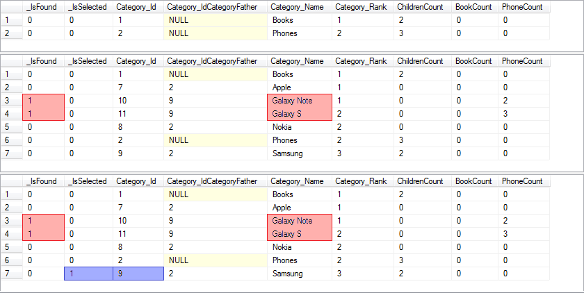
The TreeNodeHelper class is used to create a hierarchical collection from a flat one.
Here an example with the Category_Custom_SearchHierarchy stored procedure.
Implement the CategoryNode class (Models\CategoryNode.cs) and add the 3 custom properties ChildrenCount, BookCount and PhoneCount (values returned by the stored procedure).
namespace Com.Example.Labs.Models { using System; public class CategoryNode : TreeNodeBase<ICategory> { #region [ Constructor ] public CategoryNode(ICategory item) : base(item) { } #endregion #region [ Properties ] /// <summary> /// Gets or sets the number of children attached to this category (in database). /// </summary> public int ChildrenCount { get; set; } /// <summary> /// Gets or sets the number of books attached to this category (in database). /// </summary> public int BookCount { get; set; } /// <summary> /// Gets or sets the number of phones attached to this category (in database). /// </summary> public int PhoneCount { get; set; } /// <summary> /// Gets or sets the value indicating whether the element comes from the search. /// </summary> public bool IsFound { get; set; } /// <summary> /// Gets or sets the value indicating whether the element is selected. /// </summary> public bool IsSelected { get; set; } #endregion #region [ Methods ] public override string ToString() { return string.Format("{0} ({1})", base.ToString(), this.Item.Name); // for debugging } #endregion } }
Implement the following method
public TCollection<CategoryNode> SearchHierarchy(string searchString, long? selectedIdCategory = null) { var flatCollection = new TCollection<CategoryNode>(); DbConnection dbConnection; var parameters = new Dictionary<string, object>(); parameters.Add("@SearchString", searchString); parameters.Add("@SelectedIdCategory", selectedIdCategory); using (var dbReader = base.ToDataReader("Category_Custom_SearchHierarchy", parameters, out dbConnection)) { while (dbReader.Read()) { var category = new Category(); category.Map(dbReader, base.UserContext); // Auto mapping var node = new CategoryNode(category); // Custom mapping... node.IsFound = TypeHelper.To<bool>(dbReader, "_IsFound"); node.IsSelected = TypeHelper.To<bool>(dbReader, "_IsSelected"); if (dbReader.HasColumn("ChildrenCount")) node.ChildrenCount = TypeHelper.To<int>(dbReader, "ChildrenCount"); if (dbReader.HasColumn("BookCount")) node.BookCount = TypeHelper.To<int>(dbReader, "BookCount"); if (dbReader.HasColumn("PhoneCount")) node.PhoneCount = TypeHelper.To<int>(dbReader, "PhoneCount"); flatCollection.Add(node); } } if (dbConnection != null) dbConnection.Close(); return TreeNodeHelper.Hierarchize( flatCollection, f => f.Id, // Id property f => f.IdCategoryFather, // Parent property f => f.Name) // OrderBy property .Cast<CategoryNode>() .ToTCollection(); }
Implement the following method
[BusinessMethod] public TCollection<CategoryNode> SearchHierarchy(IUserContext userContext, string searchString, long? selectedIdCategory = null) { using (var et = new ExecutionTracerService()) using (var db = new CategoryCrud(userContext)) { return db.SearchHierarchy(searchString, selectedIdCategory); } }
Output
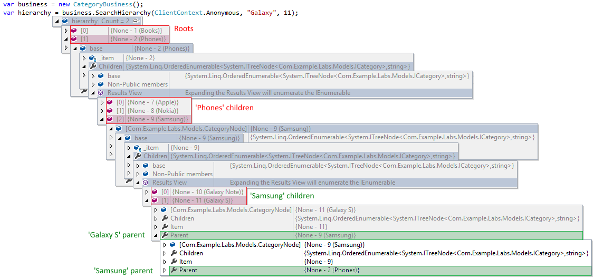Do not forget to execute the LayerCake Generator process to integrate the method at the Services and WCF layers.
var hierarchy = business.GetHierarchy(ClientContext.Anonymous, idCategory: 2); // for example, gets the hierarchy from 'Phones' node var query = hierarchy.Cast<ITreeNode<ICategory>>(); // cast CategoryNode to ITreeNode<ICategory> -> ITreeNode required to use LinqToTree var data = query.Descendants().Where(n => n.Item.Name.Contains("Galaxy")); // Methods available: // Ancestors() : returns a collection of ancestor elements. // Descendants() : returns a collection of descendant elements. // Elements() : returns a collection of child elements. // SelfAndAncestors() : returns a collection containing this element and all the ancestor elements. // SelfAndDescendants() : returns a collection containing this element and all the descendant elements. // SelfAndElements() : returns a collection containing this element and all the child elements.